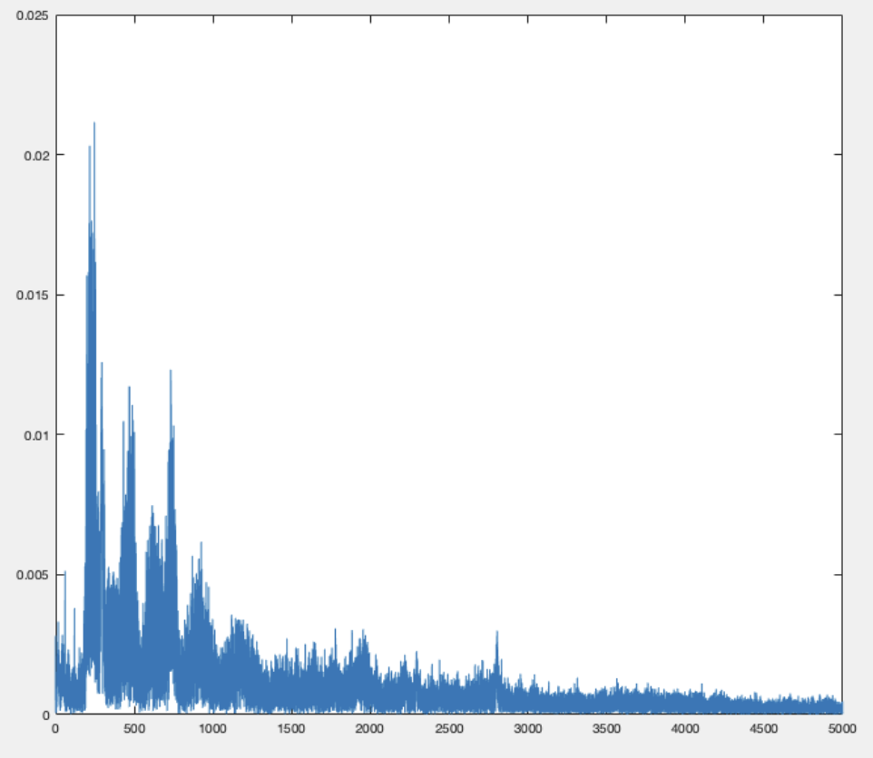

For this project, we built a trash can that come to you. Throwing trash is hard, especially when you are too lazy to walk to the trash can. To solve this problem, we want to build a robot that can help people throw trash more efficiently. In other words, it’s an intelligent mobile trash can that can move to wherever the user is located by identifying where the user's sound is coming from and open/close its lid before/after trash is thrown. From a technical perspective, this project will demonstrate many topics we have discussed in class/labs, such as audio data manipulation, multithreading, etc. From a practical perspective, this will be a useful project because we will be able to use it in our homes if implemented successfully.
For this project we wanted to build something fun and useful. As college students, trivial tasks such as throwing trash could often distract us from studying, so we see the need in building a mobile robot trash can that makes this process simpler. The cricket synthesis lab has provided us with necessary knowledge to build another sound-based project, and we also wanted to experiment with implementing simple intelligence on the RP2040, such as target phrase recognition.
Sound Localization: Ideally if we had three identical microphones we could find the direction of the sound source by tracing out a locus for each (3) pair of microphones on which the distance to the two endpoints are of a fixed ratio (determined by the actual intensity received). Below is an example of how the exact location (and hence the direction) of the sound source can be calculated with given intensity. Direct calculation is expensive, but we could work on the path later to find cheaper ways to approach this. In our demo we used ratio of intensities to approximate ratio of the angles, and it seems to work well provided that the data collected were accurate.
Distance sensing: to determine when the robot has reached the target, we used an ultrasonic sensor to measure the distance. More is covered later in the design sections, but the basic principle of the sensor sends a signal that bounces back from the closest surface and gets picked up again, so knowing the speed of sound, we can calculate the distance traveled based on the length of the echo signal.
Below is a flowchard of our original logical design.
There were several key tradeoffs and our decisions led to our final design. When we first looked at the samples collected from the two microphones, we could not observe a significant difference in amplitude or intensity of the microphones. We first tried to amplify the signal physically by using op amps, but it didn’t work well. Therefore, we decided to de-noise and compare the maximum magnitude of signals at the desired frequency range digitally.
To further alleviate the problems of the great amount of noise and low amplitude of collected samples from the microphones, we folded paper into cone shapes and surrounded our microphones with them, which helped to some degree. We discussed more about the things we tried to compensate for the hardware problems in the following section.
The schematic for our hardware setup. We have a 4.5V battery to power the pico, distance sensor, and microphones, and a 9V battery to power the motor driver.
The motors, breadboard, batteries are secured on a piece of wood. We were able to control the direction and speed of the motors with the L298N motor driver. Each motor is controlled by 3 pins. 2 for direction and 1 for speed.
Parts of our hardware setup:
Below is a detailed account of the implementation of our core functionalities.
To collect sound samples from the three microphones, we set up three adc channels and a FIFO from which a DMA channel can get the data, increasing the speed of the program. We alternated the collection of samples from the microphones by giving them each an id and changed the input selection for adc to different channels based on the current id. This works since the time needed for each iteration is very short and we can view the samples as being collected at the same time. To fix issues that may occur due to this setup, we also consider multiple sets of data before deciding that a sound is detected (discussed below). When enough samples are collected (which is 1024 in our case), we stored them into a fixed-point array and calculated the FFT. We used the same FFT code from lab 1, which performs a FFT using fixed points.
From the FFT, we computed the highest magnitude within the desired frequency range (500 - 550 Hz range) and stored it in an array. The value from the last collection is also stored. The index of the arrays corresponds to the id of a microphone, and whenever a set of samples are collected, we compare all the values in the two arrays. First the maximum value in the two arrays is found, and if it exceeds a certain threshold (we experimented with), the series of actions of moving toward the sound source would be taken. Otherwise, the next iteration in the while loop is entered. A counter is also set up to maintain some time interval between sound collection and detection routine.
The final way we decided to use for angle calculation is using the proportion of the two largest magnitudes out of the three microphones. We calculate the proportions to determine the angle the robot should rotate, relative to the head of the robot. Based on which two microphones get the highest magnitudes, the proportion is multiplied by 120 degrees and manipulated with positive/negative values so that the resulting value would let the robot turn towards the sound sources reasonably. It would rotate clockwise with a positive angle, and counterclockwise with a negative angle.
From the calculated angle, the rotation of the robot is controlled by setting the GPIOs to the motor driver. The plus or minus sign of the angle determines which inputs to the driver would be set high, and the magnitude of the angle determines how long the GPIOs would stay high. We use the sleep_ms() function and the magnitude is multiplied by a multiplier (which is a parameter we can adjust and experiment with) to get the right amount of time needed.
After identifying the direction, we want the robot to move towards the sound. We used an infrared distance sensor mounted next to the trash can. Trashdog will move forward until it senses an obstacle within around 15 cm. Since we only run this one thread on the core, we decided to simply use a counter to represent the distance and experimented to get an estimated counter value for the distance. TRIG and ECHO are connected to GPIOs of our pico, and pull-down is set up for the ECHO pin. To get data from the sensor, we set the GPIO for TRIG signal high for 10 us and then set it back to low. Then we wait (using a while loop) until the GPIO for ECHO signal goes from 0 to 1, at which point we start incrementing the counter. The counter would keep incrementing as long as the ECHO stays high, thus giving a value that is proportional to the distance.
We use an extra motor to open the lid. We could have used a servo but we chose the motor because of ease of implementation due to time constraints. The motor is directly controlled by a GPIO pin using a BJT. The collector of the npn transistor is connected to the system 3.3V, and its emitter is connected to the positive terminal of the motor. Its base is connected to the GPIO with a resistor in between. In this way, we could set the GPIO high to turn on the motor whenever the robot stops moving after it gets close to the obstacle.
This particular project is challenging for both the hardware limitations and the approach we decided to take, so we have tried many solutions. While a lot of them have failed, they nonetheless provided valuable insights and helped us to understand the system better.
Our design uses 3 microphones and computes directional information based on the differences in their data collected. Initially we wanted to use the time difference between when a signal is first observed relative to the microphones to determine direction, but realized that the signal was too noisy for the system to make any useful predictions. We decided that intensity could be another basis to perform calculations upon, since it requires less accuracy in the time division and should be relatively easy to obtain usable values. Of course, this involves some complex calculations and again, the challenge of dealing with noisy and inconsistent data, but we tried our best to derive an approximation that yielded satisfactory results.
To investigate how to make the best use of our poor sound samples, we decided to output the raw numerical values and saw that noise. To get the sound samples, which we printed to the serial, we needed a program that could read from serial and save the data. We first tried to do this with MATLAB. While we successfully got some data from the serial, the process got very complicated as MATLAB could not sense the collection and obtain data quite well. We then switched to Python and successfully set up a process so that we could collect samples, generate a .wav file based on the samples and play back the recording, and do some other analysis.
First, we tried to FFT our sound samples in MATLAB and got the following results:
We then used a band pass filter in matlab to try to reduce noise. Through experiments, we found out that 100-2000 Hz is quite good. If we lower the upper frequency, there is less noise but our voice also becomes hard to hear. We also tried to record a sample without any human speech so it only contained noise. And then we subtracted the voice sample with this noise sample. But the result didn’t show much difference in quality of sound. The approach we ended up using was to intentionally maintain a consistent frequency when saying the commands (or for simplicity, just use a tone generator), so the limit in frequency ranges could help the system to deal with other inconsistencies.
In the beginning we hoped that our robot would be able to recognize very simple commands and perform tasks accordingly. We found a C library named PocketSphinx online that performs real-time voice individual word recognition. To get our samples working on the library, we also did a lot of modifications, such as changing sample frequencies to have better compatibility. The results looked promising when we ran the system locally on our computers. However, we ended up having difficulties installing the dependencies on RP2040. For example, after we combined the libraries and set up the CMakeLists files, when we run the make command, it failed to read the assembly file in the pico-sdk files.
After spending some time on figuring out solving the problem, we decided to seek an alternative solution. Inspired by the ideas of wavelet transforms, we tried building a dynamic buffer that continuously computes the spectrogram of the audio input, and performed cross-entropy with a target sample that we recorded in advance to locate specific phrases. This worked on our local python script, but unfortunately we did not end up implementing this because the signal was too noisy for us to make any predictions. Below is the result we got using “apple” as the target phrase, and ran our algorithm on an audio clip that reads different words (such as “banana”, “peach”, etc.). The three minimums indicate high levels of similarity, and they correctly identify when the words “apple” were heard.
Our trashbot can achieve satisfactory performance when we play a computer generated sound at a certain frequency at a short distance (~0.5m) for a longer period of time (~3s). During our informal testing, it will usually turn to the correct orientation. But its accuracy and responsiveness degrades once we increase the distance or use human speech as a sound source.
Our values for frequency detection range and threshold are not completely tuned. So sometimes our trashbot would respond to noise and become very easy to trigger. It also tends to overturn, ending up in incorrect orientation. We also observed that our motor speed changes due to dropping battery level. This makes it hard to set our pwm values for the trashbot to turn a certain angle.
In conclusion, we built a low fidelity proof of concept for a sound localization robot. The process did not go as smoothly as we wanted and many unexpected roadblocks rose up in the middle of the process. As a result we did not get enough time to fine tune our system. The product is a trashdog with its own character. If we were to do it differently next time, we will definitely choose another microphone with better sound sampling quality. We would also love to deploy the speech recognition algorithm we tested out on pc but didn’t get to build on pico. We might give another try to the time difference approach as that is more intuitive and more commonly used for sound localization.
Looking back to our original goals, we implemented our basic core features with a certain degree of success. We added a small add-on feature for the trash can to open its lid. We did not get to integrate our sound detection feature onto the pico. But overall we are satisfied with our result in a short time frame.
For intellectual property considerations, we wrote all the codes ourselves and referenced our previous lab works from https://ece4760.github.io.
The group approves this report for inclusion on the course website.
The group approves the video for inclusion on the course youtube channel.
We worked together for most parts of the project. Below is a list of functionalities that we worked separately on: